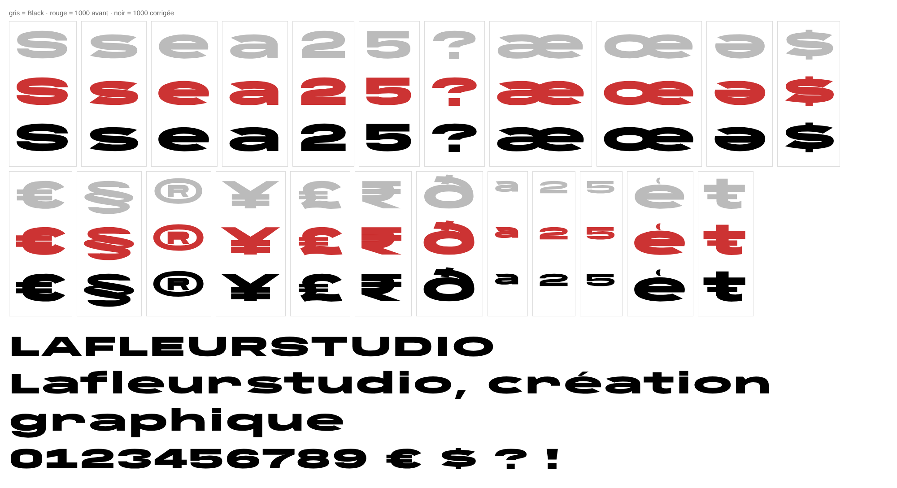

LaFleurStudio · 2026
CALEBARD
Une sans-serif super étendue, taillée pour les titres, les logos et l'affiche. Des lettres larges, posées, avec un petit côté pub de voiture de sport des années 70.
11 graisses, du Hairline, fin comme un cheveu, jusqu'à l'Extreme Black. Toutes étirées à 130 %, avec des épaisseurs rééquilibrées à la main.
Les graisses
De 100 à 1100. Au-delà du Black, l'Extra Black et l'Extreme Black ont été poussés plus loin que la police d'origine.
Testeur
Clique sur le texte pour écrire le tien.
Astuce : l'Extreme Black est déclarée comme une famille à part sur le web (voir « Télécharger »).
Caractères
Majuscules, minuscules, chiffres, accents, ponctuation et symboles, dont © ® ™ et les monnaies.
Comment on l'a faite
Calebard n'a pas été dessinée de zéro : elle part d'une police libre, transformée étape par étape avec des scripts Python. Voilà le chemin.
Trouver une base libre
Le style visé, c'était celui des sans-serif super étendues. Pour que le résultat soit libre, il fallait partir d'une police elle-même libre.
On est donc parti d'Anybody, d'Etcetera Type Co., publiée sous licence SIL OFL : libre d'utilisation, même commerciale, et modifiable.
Étirer à 130 % sans déformer
Anybody s'arrête à 150 de largeur. Pour aller plus loin, il fallait étirer les lettres. Le problème : étirer à 130 % épaissit les traits verticaux de 30 %, mais pas les horizontaux. Les lettres ont l'air déformées.
La solution : prendre les coordonnées horizontales d'une graisse plus fine, puis étirer. Les verticales retombent pile à leur épaisseur d'origine. Les coordonnées verticales, elles, viennent de la vraie graisse. Pour le Black : verticales à 559 unités contre 560 à l'origine, au lieu de 728 en étirement brut.

Construire la famille
La même méthode a été appliquée à chaque graisse, chacune avec sa propre graisse « source » pour les horizontales. Pour le Hairline, il a même fallu prolonger Anybody un poil sous sa graisse minimale.
Les noms ont été choisis un par un : Hairline, Thin, Light, Regular, Medium, Bold, Extra Bold, Super Bold, Black.
| Graisse | Poids | Source horizontale | Trait visé | Étirement brut | Résultat |
|---|
Dépasser le Black
Anybody s'arrête à 900. Pour l'Extra Black (1000) et l'Extreme Black (1100), la police a été prolongée au-delà de sa limite.
Plus c'est gras, plus les trous se bouchent. Un script a mesuré les fentes de chaque caractère, puis les lettres fautives ont été corrigées une par une, en affinant seulement leurs horizontales : 43 corrections pour l'Extra Black, 56 pour l'Extreme Black, plus quelques accents déplacés.

Arrondir les coins
Sur les graisses les plus grasses, la fente du 5 débouchait dans son trou avec un coin net, pas très joli. On l'a remplacé par une courbe douce : trois versions testées, la n° 2 retenue.
La même règle a ensuite été appliquée aux lettres qui avaient ce coin, S, 2, 3, 6, 9, ? et C, sur le Super Bold, le Black, l'Extra Black et l'Extreme Black.

Vérifier, encore
À chaque étape, le résultat a été rendu dans un vrai navigateur et vérifié à l'œil. Les 650 caractères tapables ont été mesurés automatiquement pour repérer ce qui casse.
Les scripts sont dans le dossier source du dépôt.
Télécharger
Libre et gratuite, y compris pour un usage commercial. Garde le fichier de licence avec la police.
Sur un site web
@font-face { font-family: "Calebard"; font-weight: 400;
src: url(Calebard-Regular.woff2) format("woff2"); }
@font-face { font-family: "Calebard"; font-weight: 900;
src: url(Calebard-Black.woff2) format("woff2"); }
/* … une règle par graisse, de 100 (Hairline) à 1000 (Extra Black) */
/* L'Extreme Black est aussi en 1000 : déclare-la à part */
@font-face { font-family: "Calebard Extreme"; font-weight: 1000;
src: url(Calebard-ExtremeBlack.woff2) format("woff2"); }